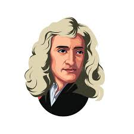
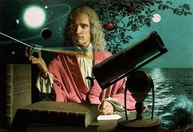

| inicio | logros | galeria | contacto |
Isaac Newton |
|||
🌱 Infancia y entorno familiar (1642–1654)Isaac Newton nació el 4 de enero de 1643 (25 de diciembre de 1642, calendario juliano) en Woolsthorpe-by-Colsterworth, un pequeño pueblo rural de Lincolnshire, Inglaterra. Era un niño prematuro y tan frágil que muchos pensaron que no sobreviviría. Su padre, también llamado Isaac Newton, había muerto tres meses antes de su nacimiento, lo que dejó a su madre, Hannah Ayscough, sola y con recursos limitados. Cuando Newton tenía tres años, su madre se casó con un hombre mucho mayor, Barnabas Smith, y se mudó a otra casa, dejando a Isaac al cuidado de su abuela materna. Esta separación marcó profundamente a Newton; sus escritos personales muestran resentimiento y soledad en su niñez. Desde pequeño, mostró un carácter introspectivo y reservado, a menudo aislado de otros niños. 📚 Juventud y primeros estudios (1654–1661)A los 12 años, Newton fue enviado a la King’s School en Grantham. Allí vivió como huésped en casa de un boticario, lo que despertó su interés por la química, los instrumentos mecánicos y los experimentos. Al principio no destacó como estudiante, pero un conflicto con un compañero lo motivó a esforzarse al máximo. Pronto se convirtió en el primero de su clase. Su madre intentó retirarlo de la escuela para que se encargara de las labores agrícolas en Woolsthorpe, pero Newton demostró ser pésimo para el trabajo rural. Su maestro intercedió para que lo dejaran volver a estudiar, lo cual le abrió el camino hacia la universidad. 🎓 Universidad de Cambridge (1661–1665)En 1661 ingresó al Trinity College de la Universidad de Cambridge como sizar, una categoría de estudiante con apoyo económico que trabajaba para costear sus estudios. Allí comenzó a aprender matemáticas, filosofía natural y astronomía a partir de los grandes pensadores de la época: Descartes, Kepler y Galileo.
|
|||
 |
|||
☣️ Los “años milagrosos” durante la Gran Plaga (1665–1667)En 1665, la Gran Plaga de Londres obligó a cerrar Cambridge, y Newton regresó a su hogar en Woolsthorpe. Este período, lejos de ser una pausa, se convirtió en la etapa más productiva de su vida:
Esta explosión de creatividad es la razón por la que muchos consideran a esos dos años como la etapa más brillante en la historia del pensamiento científico. 🧪 Regreso a Cambridge: catedrático y científico (1667–1687)Al volver a la universidad, Newton se convirtió en profesor y empezó a publicar sus investigaciones. Construyó el primer telescopio reflector funcional, hoy conocido como el telescopio de Newton, que evitaba la distorsión cromática de los telescopios refractores. En esta época también tuvo roces con otros científicos, en especial con Robert Hooke, secretario de la Royal Society, sobre la teoría de la luz y el color. Newton, muy sensible a las críticas, evitaba publicar hasta estar absolutamente seguro de su trabajo. Su obra maestra llegó en 1687: los Philosophiae Naturalis Principia Mathematica, conocidos como los Principia. Fueron financiados en buena parte por su amigo y astrónomo Edmund Halley. Este libro cambió para siempre la ciencia. 🏛️ Vida pública: la Casa de la Moneda y el poder intelectual (1687–1703)En 1696, Newton aceptó un cargo en la Casa de la Moneda británica, donde combatió la falsificación y reformó por completo el sistema monetario. Era extremadamente meticuloso y severo: llevó a juicio a numerosos falsificadores, a algunos de los cuales se ejecutó. En 1703, Newton fue elegido presidente de la Royal Society, uno de los cargos más prestigiosos del mundo científico. Ejerció esta posición con autoridad y, a veces, con dureza. Durante este periodo surgió su famosa disputa con Gottfried Leibniz por la invención del cálculo. Aunque ambos lo desarrollaron de manera independiente, Newton utilizó su influencia para favorecer su propia posición. 🔬 Madurez, reconocimiento y últimos años (1703–1727)Newton pasó sus últimos años en Londres, rodeado de admiración y riqueza. Fue el primer científico en recibir un título de caballero, otorgado por la reina Ana en 1705. A pesar de su fama científica, gran parte de su tiempo lo dedicó a estudios de teología y alquimia, campos en los que dejó miles de páginas inéditas. Newton era profundamente religioso y veía sus descubrimientos como una forma de comprender mejor la obra divina. Murió el 20 de marzo de 1727 mientras dormía, a los 84 años. Fue enterrado con honores en la Abadía de Westminster, un reconocimiento reservado para las figuras más ilustres de Inglaterra. |
|||
 |
|||
| Ivonne Mendoza 3°c | |||